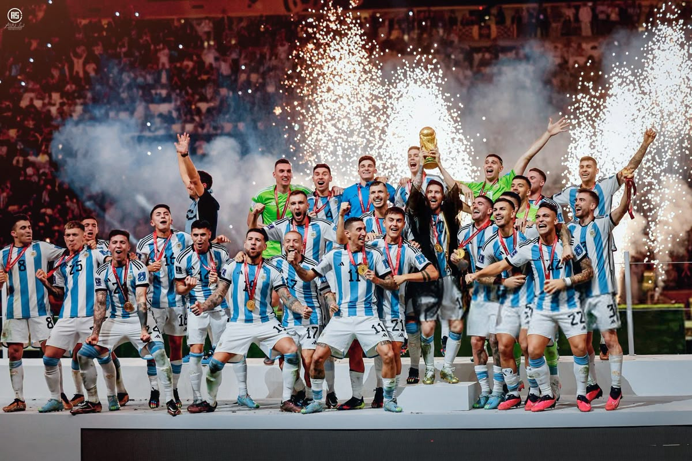
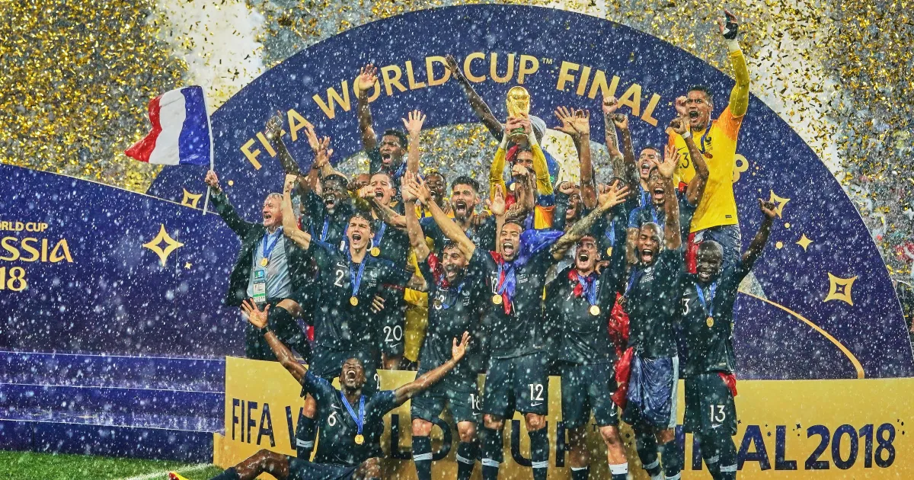
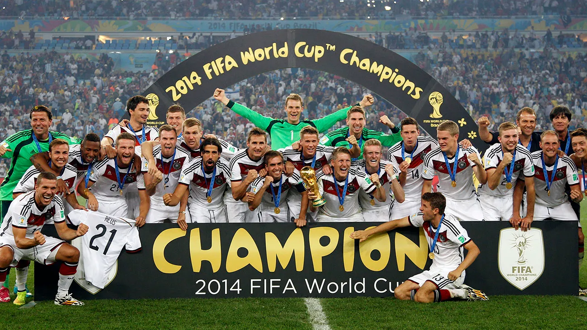
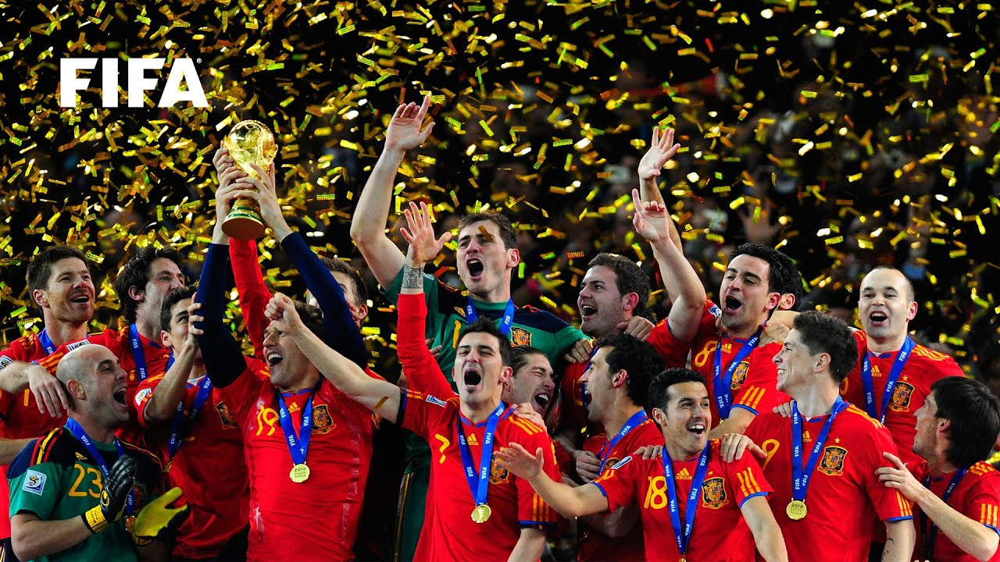
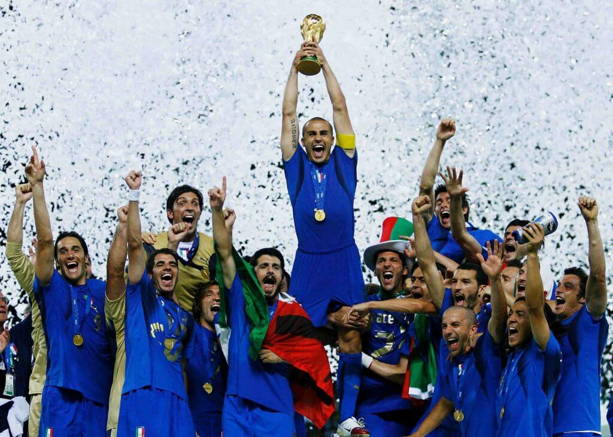
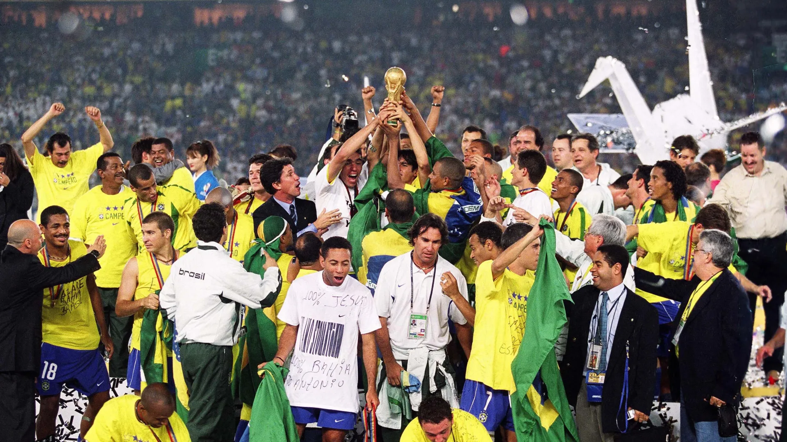

History of World Cup
The FIFA World Cup is the most prestigious football tournament in the world, held every four
years and organized by FIFA. It began in 1930 in Uruguay, where the host nation won the
first title by defeating Argentina in the final. Since then, the tournament has become a global
sporting event followed by billions of people.
The tournament has also created some of football’s most historic moments, such as Maradona’s “Hand of God”
goal in 1986 and Germany’s dramatic 7–1 victory over Brazil in 2014.
These moments made the World Cup more than just a competition—it became a stage for history and emotion.
The most recent World Cup was held in 2022 in Qatar, where Argentina,
led by Lionel Messi, won a thrilling final against France after a penalty shootout.
It is widely considered one of the greatest finals ever played.
Today, the World Cup continues to grow, and the next tournament in 2026 will be even bigger,
as it will include more teams and take place across the United States, Canada, and Mexico.
Champions of the 21th century
FIFA World Cup Qatar 2022
- Champions: Argentina
- Runners-up: France
- Third place: Croatia

The legendary Lionel Messi lifted the trophy he coveted above all others as Argentina won a third World Cup at Qatar 2022.
After falling to a shock defeat to Saudi Arabia in their opening game, Messi sparked Argentina’s tournament into life with a fabulous goal in their next match, a 2-0 victory over Mexico. He continued to deliver inspirational performances as Argentina advanced all the way to the final, where they faced reigning champions France.
There followed perhaps the greatest World Cup final of all time, with Messi netting twice and France superstar Kylian Mbappe scoring a hat-trick as a breathtaking contest finished 3-3 after extra time. Argentina triumphed in the subsequent penalty shootout as the nation won their first World Cup since 1986.
2018 FIFA World Cup Russia
- Champions: France
- Runners-up: Croatia
- Third place: Belgium

Twenty years after captaining France to World Cup glory, Didier Deschamps repeated the feat as head coach at Russia 2018.
Their star-studded team, featuring electrifying 19-year-old Kylian Mbappe, made relatively serene progress to the final, although a rollercoaster 4-3 last-16 win over Argentina tested French nerves.
Their star-studded team, featuring electrifying 19-year-old Kylian Mbappe, made relatively serene progress to the final, although a rollercoaster 4-3 last-16 win over Argentina tested French nerves.
2014 FIFA World Cup Brazil
- Champions: Germany
- Runners-up: Argentina
- Third place: Netherlands

A Germany side boasting a potent mix of style, substance and dynamism came out on top when the World Cup returned to South America in 2014.
Joachim Low’s side recorded one of the most jaw-dropping results in World Cup history in the semi-finals, producing a devastating display of attacking football to demolish hosts Brazil 7-1.
The final against Argentina was a much closer affair, with Mario Gotze eventually settling the clash in the Germans’ favour with a superbly executed extra-time volley.
2010 FIFA World Cup South Africa
- Champions: Spain
- Runners-up: Netherlands
- Third place: Germany

A formidable Spanish team starring Sergio Ramos, Andres Iniesta, Xavi and David Villa recovered from the shock of an opening-game defeat to Switzerland to triumph in 2010.
Spain progressed to the final of the tournament, which was held in Africa for the first time, with three 1-0 knockout-stage wins over Portugal, Paraguay and Germany respectively.
The same scoreline saw them edge out the Netherlands in the Johannesburg final, with Andres Iniesta superbly firing home just four minutes from the end of extra time to secure Spain’s first World Cup success.
2006 FIFA World Cup Germany
- Champions: Italy
- Runners-up: France
- Third place: Germany

Italy, under the expert tutelage of legendary head coach Marcelo Lippi, became world champions for the fourth time at Germany 2006.
The Italians broke host nation Germany’s hearts in a memorable semi-final, with Fabio Grosso and Alessandro Del Piero scoring wonderful goals deep into extra time to secure a memorable victory.
France awaited in the final and, after falling behind to Zinedine Zidane’s penalty, Italy levelled through Marco Materazzi's bullet header. That goalscoring pair were subsequently involved in the game’s flashpoint, with Zidane sent off in extra time for a headbutt on the defender. The score remained deadlocked at 1-1 after 120 minutes, and Italy prevailed in the penalty shootout, with man-of-the-moment Grosso scoring the winning kick.
2002 FIFA World Cup Korea/Japan
- Champions: Brazil
- Runners-up: Germany
- Third place: Turkey

Brazil were back on top of the world when the tournament went to the Far East for the first time in 2002.
Ronaldo starred again throughout the competition, scoring eight times to win the Golden Boot. And, in stark contrast to his heartbreaking final experience four years previously, on this occasion he was the match-winner, hitting a brace against Germany to fire Brazil to a 2-0 win and a record-extending fifth World Cup title.